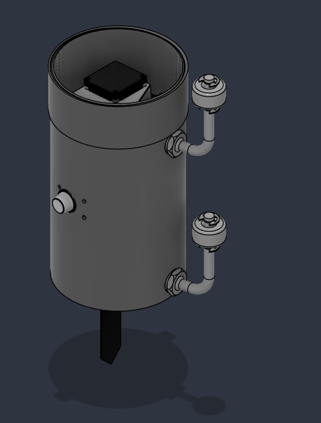
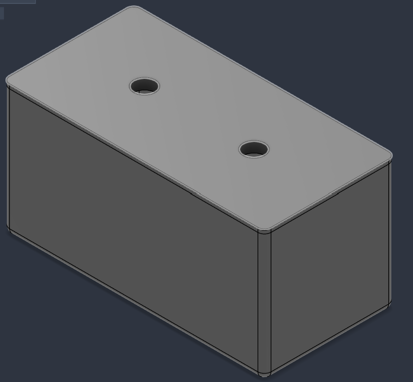
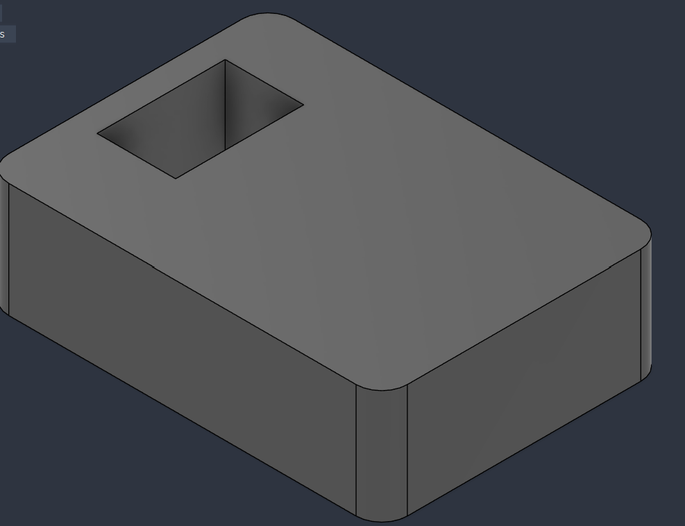

How Pawan IoT Works
A distributed, AI-powered environmental monitoring network designed to detect hazards locally, validate them regionally, communicate through resilient field networking, and turn environmental observations into actionable information.
Five layers, one continuous data path
Each layer has a different job: sensing, communication, regional validation, cloud intelligence and user-facing action.
E-Unit
Field sensing + local Edge AI
- ESP32-P4
- Hazard-specific sensors
- Preprocessing
- Risk + confidence
LoRa Network
Resilient field communication
- Multi-hop routing
- Packet identification
- Buffering
- Reliable delivery
Gateway
Regional aggregation
- Collects nodes
- Cross-node validation
- Anomaly detection
- Internet/cellular backhaul
Cloud + Server AI
Data fusion + forecasting
- FastAPI
- PostgreSQL
- External datasets
- Temporal analysis
Applications
Information + alerts
- Citizen app
- Authority dashboard
- Risk maps
- Notifications
E-Unit: intelligence starts at the sensor
The field node is designed to do local processing instead of blindly sending every raw reading to the cloud.
Controller
ESP32-P4 acts as the field processing platform. Event-driven operation, local inference and selective communication help reduce unnecessary workload.
Sensor packages
Sensor combinations are selected according to the hazard: flood, forest fire, landslide, earthquake, extreme heat, air pollution, gas leakage or water quality.
Edge AI
A lightweight Edge Impulse model can classify local conditions, identify anomalies and attach a risk/confidence result to the event.
Example: your physical air-quality E-unit
| Sensor | Measurement | Purpose |
|---|---|---|
| SDS011 | PM2.5 / PM10 | Particulate pollution |
| SGP40 | VOC / VOC Index | VOC-related environmental signal |
| MQ-2 | Smoke / gas response | Low-cost smoke/gas indication |
| MPU6050 | Acceleration / motion | Vibration and motion indication |
LoRa connects the field when normal infrastructure is unreliable
Pawan IoT uses a multi-hop LoRa field network so information can move through nearby nodes toward a gateway.
Multi-hop
If a node cannot directly reach the gateway, another node can forward information when the routing/link conditions allow it.
Reliable packets
Messages can carry node ID, timestamp, sensor data, AI result, power state, hop count, message ID and integrity information.
Offline buffering
If the internet/backhaul fails, the gateway can retain data and forward it after connectivity returns instead of losing the observation.
Node ID | Timestamp | Sensor Data | AI Result | Power State | Hop Count | Message ID | Integrity
Gateway: from one reading to regional evidence
The gateway checks whether observations from nearby nodes support each other, helping distinguish isolated sensor anomalies from broader events.
Receive
Collect packets from multiple E-units through the LoRa network.
Validate
Check message identity, sequence information, integrity and expected node behaviour.
Regional consensus
Compare neighbouring observations. Several agreeing nodes provide stronger regional evidence than a single isolated reading.
Anomaly detection
Gateway-level analysis can identify unusual patterns in the aggregated sensor observations.
Forward or buffer
Send validated information to the backend when backhaul is available; otherwise retain it locally.
From field observations to wider environmental intelligence
FastAPI
Provides APIs for device data, users, processing, alerts and application access.
PostgreSQL
Stores raw and processed observations, device information, AI outputs and alerts for historical analysis.
Data fusion
Local observations can be combined with trusted external environmental, government and satellite datasets after time/location/unit normalization.
Three levels of intelligence
Edge AI — “What is happening here?”
Fast local classification and anomaly detection using sensor data.
Gateway AI — “Is it regional?”
Neighbour comparison and regional validation increase confidence in a wider event.
Server AI — “What may happen next?”
A temporal forecasting model can learn from historical, real-time and external environmental data to estimate future risk.
Designed for imperfect field conditions
Offline-first
Gateway buffering protects observations during temporary backhaul outages.
Integrity
Message IDs, sequence information and integrity checks help identify corruption, duplicates and replayed messages. SHA-256 provides integrity, not authentication.
Encryption
Backend communication can use TLS. Field messages can use authenticated encryption such as AES-GCM with correct nonce and key management.
Power aware
Duty cycling, local inference and selective transmission reduce unnecessary energy use.
Sensor health
Missing, implausible or drifting measurements can be flagged instead of being blindly trusted.
Redundancy
Multiple E-units and communication paths reduce dependence on a single sensor or link.
One architecture, different sensing packages
| Hazard | Example package | Local signal |
|---|---|---|
| Flood | BME280 + 2–3 float switches + capacitive soil moisture | Water level / weather / soil condition |
| Forest fire | BME280 + 2 smoke sensors | Heat / humidity / smoke |
| Landslide | BME280 + soil moisture + MPU6050 + vibration sensors | Moisture + motion/vibration |
| Earthquake | MPU6050 + vibration sensors | Low-cost ground-motion indication |
| Extreme heat | BME280 + soil moisture | Temperature / humidity / soil state |
| Air pollution | SDS011 + SGP40 + MQ-2 + BME280 | PM + VOC + smoke/gas response |
| Gas leakage | MQ-2 + SGP40 + BME280 | Gas/smoke response + VOC |
| Water quality | E-Float Unit: pH + TDS + turbidity + optional DS18B20 | pH + dissolved-solids indication + water clarity |
How the network scales from a prototype to a regional system
The platform is modular: field nodes and gateways can be added while keeping the application and backend layers common.
Field layer
Deploy E-units at hazard-prone locations and select the sensor package according to the local risk.
Regional layer
Place gateways according to terrain, buildings, expected coverage and available communication paths.
Backhaul
Gateway backhaul can use Ethernet, Wi-Fi or cellular connectivity depending on site availability.
Cloud
FastAPI + PostgreSQL provides the shared data and application layer for monitoring, analysis and alerts.
Citizen application
Flutter can present nearby risks, notifications, maps and safety information.
Authority dashboard
Authorities can view node health, risk maps, trends, alerts and historical/predictive information.
End-to-end example: emerging forest fire
Detect
Smoke, temperature and humidity sensors observe a changing local condition.
Infer locally
The E-unit preprocesses the data and produces a local fire-risk classification and confidence.
Communicate
The event travels through LoRa toward the gateway, potentially through multiple hops.
Validate regionally
The gateway compares nearby E-units to determine whether the pattern is consistent with a wider event.
Fuse and analyse
The backend combines validated field information with available external data and server-side analysis.
Alert
Users receive a risk notification with supporting evidence rather than only a raw sensor value.
Two E-Unit variants for different environments
Pawan IoT uses the same distributed E-Unit concept in two physical variants: a Normal E-Unit for environmental/hazard monitoring on land, and an E-Float Unit designed to operate in or at the water body for direct water-quality monitoring.
01 — Normal E-Unit
The standard field node is installed on land or at a monitored site. It uses hazard-specific sensors for air pollution, fire, landslide, earthquake, heat, flood context and other environmental events.
Typical controller: ESP32-P4 + LoRa + selected environmental sensors + local Edge AI.
02 — E-Float Unit
The E-Float Unit is the water-monitoring variant. It is designed to be placed in/at the water so its probes can directly measure water-quality parameters.
Primary measurements: pH, TDS and turbidity, with water temperature as an optional/supporting measurement.
Shared architecture
Both variants follow the same Pawan IoT pipeline:
Sensors → ESP32-P4 → Local processing/Edge AI → LoRa → Gateway → Cloud
E-Float Unit — water-quality sensing
The E-Float Unit focuses on the condition of the water itself rather than only measuring the surrounding environment.
| Sensor | Parameter | Role |
|---|---|---|
| pH Probe | pH / acidity-alkalinity | Detects changes in water acidity/alkalinity and abnormal pH conditions. |
| TDS Sensor | Total dissolved solids indication | Provides an electrical-conductivity-derived indication of dissolved material in the water. |
| Turbidity Sensor | Water clarity / suspended particles | Detects changes in water clarity caused by suspended particles. |
| DS18B20 (optional/supporting) | Water temperature | Provides temperature context and can support temperature compensation where applicable. |
How the E-Float Unit works
Deploy in the water
The E-Float Unit is positioned so the water-quality probes are exposed to the monitored water while the electronics are protected inside the enclosure.
Acquire water-quality data
The pH, TDS and turbidity sensors continuously or periodically provide measurements according to the configured sampling interval.
Local processing
The ESP32-P4 filters/validates measurements and can calculate water-quality features or classify abnormal conditions locally.
Transmit through LoRa
The E-Float Unit sends the water-quality status and relevant measurements through the Pawan IoT LoRa network toward a gateway.
Regional validation
The gateway can compare water-quality observations from multiple E-Float Units or nearby environmental nodes to identify wider changes and suspicious isolated readings.
Cloud analysis and alert
Validated measurements are stored and analysed. Applications can show water-quality trends, abnormal conditions and alerts.
Two-unit architecture
Sensor-by-sensor technical details
Each sensor has a defined role in the environmental intelligence pipeline. The same Pawan IoT architecture can use different sensor combinations for different hazards.
BME280
Measures: temperature, relative humidity and atmospheric pressure.
Used for: flood, fire, landslide and extreme-heat nodes.
AI features: temperature trend, humidity, pressure change and environmental context.
SDS011
Measures: particulate matter, primarily PM2.5 and PM10.
Used for: air-pollution monitoring.
AI features: PM concentration, trend, rate of change and pollution-event detection.
SGP40
Measures: VOC-related air-quality signal / VOC Index.
Used for: air pollution and gas-related environmental context.
AI features: VOC trend and anomaly features.
MQ-2
Measures: broad smoke/gas response from a low-cost semiconductor gas sensor.
Used for: smoke and gas-leak indication.
Important: it should not be presented as calibrated ppm concentration for a specific gas without calibration.
MPU6050
Measures: 3-axis acceleration and angular-rate data.
Used for: vibration, motion, landslide and low-cost ground-motion indication.
AI features: acceleration magnitude, vibration statistics and abnormal-motion patterns.
SW-420 / SW-520D
Type: low-cost vibration/shock switch modules.
Used for: landslide and earthquake prototype detection.
Role: provide discrete vibration-event signals that complement MPU6050 data.
Float Switches
Type: discrete water-level switches.
Used for: flood monitoring.
Role: detect predefined water-level thresholds rather than continuously measuring depth.
Capacitive Soil Moisture
Measures: relative soil-moisture condition.
Used for: flood, landslide and extreme-heat context.
AI features: wetness level, trend and rapid moisture changes.
DS18B20
Measures: temperature.
Used for: water-quality nodes.
Role: water-temperature measurement and contextual feature for water monitoring.
Analog TDS Sensor
Measures: electrical-conductivity-derived total dissolved solids indication.
Used for: low-cost water-quality prototype.
Important: requires calibration and temperature compensation for meaningful field measurements.
pH Probe
Measures: acidity/alkalinity of water.
Used for: water-quality monitoring.
Role: pH trend and abnormal-water-condition detection.
Turbidity Sensor
Measures: water turbidity / relative clarity.
Used for: the E-Float Unit water-quality package.
Role: identifies changes in suspended-particle-related water clarity.
Hazard-to-sensor mapping
| Hazard | Sensor package | Primary evidence | Supporting evidence |
|---|---|---|---|
| Flood | BME280 + 2–3 float switches + capacitive soil moisture | Water-level threshold | Rain/weather context + soil wetness |
| Forest fire | BME280 + 2 smoke sensors | Smoke | Temperature + humidity |
| Landslide | BME280 + soil moisture + MPU6050 + SW-420/SW-520D | Motion/vibration | Soil moisture + weather |
| Earthquake | MPU6050 + vibration switches | Ground-motion indication | Multiple-node agreement |
| Extreme heat | BME280 + soil moisture | Temperature/humidity | Soil condition |
| Air pollution | SDS011 + SGP40 + MQ-2 + BME280 | PM2.5/PM10 | VOC + smoke response + weather |
| Gas leakage | MQ-2 + SGP40 + BME280 | Smoke/gas response | VOC + environmental context |
| Water quality | DS18B20 + TDS + pH + SEN0189 | Water-quality indicators | Temperature/context |
Three-level intelligence architecture
Pawan IoT separates immediate local inference from regional validation and longer-horizon server analysis.
Model 1 — Edge AI Classifier
Platform: Edge Impulse → ESP32-P4.
Inputs: cleaned sensor readings and derived features.
Tasks: normal/anomaly classification, hazard-event classification and local risk estimation.
Output: class + confidence + selected sensor evidence.
Why: low latency and operation without depending on internet connectivity.
Model 2 — Gateway Anomaly Detection
Platform: Edge Impulse / gateway compute.
Inputs: observations from multiple nearby E-units.
Tasks: detect unusual regional patterns and suspicious node behaviour.
Output: anomaly score/confidence plus regional evidence.
Why: a single sensor should not automatically define a regional event.
Model 3 — Server Temporal Forecasting
Platform: Linux/cloud server.
Inputs: historical observations, validated real-time data, external environmental datasets and gateway outputs.
Tasks: temporal risk forecasting and trend analysis.
Output: future risk estimate, forecast category and alerts.
Status: the architecture currently specifies a temporal forecasting model; a specific LSTM/XGBoost/Transformer should be named only after selection and validation.
AI data pipeline
Acquire
Read sensor values, timestamps, node status and communication metadata.
Clean
Handle missing readings, invalid ranges, duplicates, noise and sensor-health conditions.
Feature engineering
Create trends, rates of change, acceleration magnitude, rolling statistics and hazard-specific features.
Edge inference
The lightweight model produces a local class/risk/confidence result.
Regional validation
The gateway compares neighbouring nodes and performs anomaly/consensus analysis.
Server analysis
Historical and multi-source information is used for temporal analysis and future-risk estimation.
Action
Generate risk maps, alerts, trends and evidence for citizens and authorities.
Hardware, communication, AI, backend and applications
| Layer | Platform / Technology | Role |
|---|---|---|
| Field controller | ESP32-P4 | Sensor acquisition, preprocessing, local Edge AI and LoRa communication interface. |
| Field communication | LoRa / SX1278-class radio | Long-range, low-power field communication and multi-hop networking. |
| Gateway | ESP32-P4 + LoRa + backhaul | Collects nodes, validates regional data and forwards information. |
| Backhaul | Ethernet / Wi-Fi / cellular | Gateway-to-server connectivity. |
| Edge ML | Edge Impulse | Training/deployment workflow for lightweight edge models and anomaly detection. |
| Backend | Python + FastAPI | REST APIs, data processing, device/application integration and alert services. |
| Database | PostgreSQL | Sensor observations, devices, AI results, alerts and historical data. |
| Geospatial | OpenStreetMap / GIS layer | Risk maps, node locations and affected-area visualization. |
| Citizen application | Flutter | Mobile alerts, nearby hazards, maps and safety information. |
| Authority dashboard | Web application | Node health, trends, risk maps, alerts and historical/predictive analysis. |
| Server environment | Linux / cloud or institutional server | Backend services, data processing and server-side AI. |
| Containerization | Docker | Reproducible deployment of backend/AI services where required. |
| Authentication | OTP-based authentication | User/authority access control for the application layer. |
Security stack
Field messages
Message IDs, sequence numbers, integrity checks and authenticated encryption can be used to protect field communication.
Server transport
HTTPS or MQTT over TLS can protect gateway-to-backend communication.
Access control
Authenticated citizen and authority applications limit access to appropriate data and controls.
Distributed intelligence instead of cloud-only monitoring
Local
Detect now. Edge AI works close to the sensor and can operate without immediate internet access.
Regional
Validate the event. The gateway checks neighbouring evidence before increasing confidence in a regional hazard.
Global / cloud
Understand the wider picture. The server combines history and external data for broader analysis and forecasting.
E-Float Unit: CAD enclosure and assembly
The E-Float Unit has been developed as a physical enclosure concept in Autodesk Fusion. The CAD design shows the enclosure, internal electronics space and external interfaces for the submerged water-quality sensing arrangement.



Water-level interfaces
The cylindrical E-Float housing provides a protected electronics enclosure with external interfaces for the water-quality probes that are exposed to the monitored water.
Sensor integration
The CAD assembly provides a physical arrangement for the pH, TDS and turbidity sensing components while keeping the electronics protected inside the enclosure.
Prototype-ready design
The enclosure can be 3D printed and iterated as the sensor mounting, sealing and field installation requirements are refined.